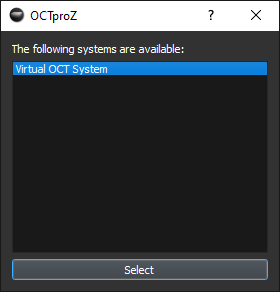

Welcome to the OCTproZ v1.7.0 User Manual!
Date: December 7, 2023 Author: Miroslav Zabic (zabic@spectralcode.de)
About
OCTproZ is an open source software for optical coherence tomography (OCT) processing and visualization. A plug-in system enables the integration of custom OCT systems and software modules.
Main features are:
- Real-time OCT processing and 3D visualization with single GPU
- Plug-in system to integrate custom OCT systems and software modules
- Cross platform: OCTproZ runs on Windows and Linux
- OCTproZ is open source! You can find the code on GitHub.
Quick Start Guide
This sections shows you how to load an OCT raw dataset with the Virtual OCT System Extension that is provided with OCTproZ. For testing purposes you can download a test data set from here.
1. Open Virtual OCT System
Click on File → Open System
The system manager opens in a new window. Select "Virtual OCT System" and click on "Select"
2. Set Virtual OCT System settings
Click on File → System Settings
The system settings window opens. Click on Select file and select the OCT raw data file you want to open. Enter the parameters in the settings window according the dimensions of your raw data (bit depth per sample, samples per line,...). For more information on the individual parameters, click on the question mark in the upper right corner and then on the input field you would like to learn more about.
3. Set processing parameters in sidebar
Enter suitable processing paramters in the sidebar. The white curves in the k-linearization, dispersion compensation and windowing plots are reference curves that indicate how a curve would look like that does not effect the processing result at all. In other words: If your curve looks exactly as the white curve then the processing result will not change if this particular processing step is deactivated. For more information on processing, see the processing pipeline section.
4. Start the processing
Click on the "Start" button in the top left of the sidebar.
5. Adjust display settings
Hover your mouse over one of the output windows and a control panel will appear that you can use to adjust the display settings.

Processing Pipeline
This section gives an overview of the OCTproZ processing pipeline. The processing takes place entirely on the GPU. OCT raw data (i.e. spectral fringes) from the OCT system is transferred to RAM until a user-defined amount of B-scans is acquired (B-scans per buffer). Via direct memory access (DMA) this raw data batch is then copied asynchronously to GPU memory where OCT signal processing is performed. Some processing steps are combined into a single compute kernel to improve performance. For example, k-linearization, dispersion compensation and windowing take place in the same kernel. This way, all three operations can be performend with just a single iteration through the sample points.

Processing Steps
-
Data conversion
The first step of the OCT processing pipeline converts the incoming raw data, that may have a bit depth between 8 bit and 32 bit, to a single-precision, floating-point complex data type with a bit depth of 32 bit. This ensures that the processing pipeline can be executed for a variety of different input data types. Furthermore, a bit shift operation is applied during the conversion process if necessary. Some digitizers, that are commonly used for swept source OCT (SS-OCT), can be configured to use 16-bit integers to store 12-bit sample values in the most significant bits (e.g. ATS9373, Alazar Technologies Inc.). To extract the actual 12-bit value a right-shift by 4, which is equal to a division by 16, needs to be applied to every 16-bit integer. -
Background removal
To estimate the background signal of each raw spectrum, a rolling average with a user-adjustable window size is utilized. Subsequently, the estimated background is subtracted from the spectrum. This step effectively eliminates the DC component in the resulting OCT images, proving particularly beneficial when employing an OCT swept source that produces sweeps with varying intensities. Such intensity variations lead to different DC terms for each A-scan, which are not entirely removed by the 'fixed-pattern noise removal' step. However, this background subtraction step effectively eliminates these variations. -
k-linearization
There are currently three interpolation methods available: Linear, Cubic Spline (Catmull-Rom Spline), and Lanczos. These methods represent a trade-off between speed and accuracy, with Linear being the fastest and Lanczos being the most accurate. The figure below shows typical interpolation artifacts that can be seen when using the different interpolation methods:
To convert the acquired raw OCT data into a depth profile, inverse Fourier transform is used, which relates wavenumber k and physical distance. Depending on the used hardware setup, the acquired spectral fringe pattern is usually not linear in k. In SS-OCT the temporal sampling points do not necessarily have to be spaced in k domain evenly, especially if k clocking is not used and in spectrometer based FD-OCT systems the interference signal is usually acquired linear in wavelength. The k-linearization resamples the raw data evenly in k space, which improves axial resolution. A user defined resampling curve r[j] can be specified by providing the coefficients of a third order polynomial. The resampling curve is a look up table that assigns every index j of the raw data array Sraw[j] an index j', i.e. j'=r[j]. To obtain a k-linearized raw data array Sk[j], the value at the index j' needs to be interpolated and remapped to the array position with index j. The equation below describes the k-linearization with linear interpolation; ⌊x⌋ denotes the floor function that takes as input x a real number and gives as output the greatest integer less than or equal to x.

-
Windowing
The raw data is multiplied by a window function, which sets the signal to zero outside of a predefined interval. This reduces side lobes in the resulting signal after IFFT. The GUI allows to choose between different window functions (Gaussian, Hanning, Sine, Lanczos and Rectangular window) and to set their width and center position. -
IFFT
The inverse Fourier transform is the essential processing step to calculate the depth profile from the acquired and pre-processed (k-lineariziation, dispersion compensation, windowing) fringe pattern. OCTproZ utilizes the NVIDIA CUDA Fast Fourier Transform library (cuFFT) to execute the inverse Fast Fourier Transform (IFFT). -
Fixed-pattern noise removal
Fixed pattern noise refers to structural artifacts in OCT images that appear as fixed horizontal lines. These artifacts are caused, for example, by variations in pixel response in the CCD camera in spectrometer based OCT systems or spurious etalons within the optical OCT setup. A common approach to reduce fixed pattern noise is to acquire a reference signal in absence of a sample and subtract it from all subsequent recordings. In OCTproZ we have implemented the minimum-variance mean-line subtraction method that was described by Moon et al. (https://doi.org/10.1364/OE.18.024395) This approach does not require an additional reference recording and can be applied continuously such that fixed pattern noise due spectral intensity variation of the source is reduced as well. -
Truncate
This step removes the mirror image on the opposite side of zero pathlength by cropping half of the processed OCT data. The mirror image is sometimes referred to as mirror artifact or complex conjugate artifact. It originates from the fact that the inverse Fourier transform is applied to a real-valued signal which results in a conjugate symmetric signal (i.e. the positive and negative distances are complex conjugates of each other). -
Logarithm
Dynamic range compression (20*log(magnitude)) prepares the data for visualization. -
Backward scan correction
To increase frame rate, a bidirectional scanning scheme can be used. However, this means that every other frame is flipped. The backward scan correction step unflips these frames.
The image above shows the effect of the backward scan correction on the en face view of an OCT volume that was acquired using a bidirectional scanning scheme. A piece of wood with a laser burned hole was used as sample. Left: Spot path on sample when a bidirectional scanning scheme is applied. Middle: En face view with enabled backward scan correction. Right: En face view when backward scan correction is disabled.
-
Sinusoidal scan correction
A resonant scanner can be used for high speed OCT systems. Due to the sinusoidal movement of the scanner the resulting B-scans would be distorted without this processing step as can be seen in the figure below.
Dispersion compensation
If sample and reference arm of an OCT system contain different length of dispersive media, a wavenumber dependent phase shift is introduced to the signal and axial resolution decreases. In this case, a hardware based dispersion compensation, such as variable-thickness fused-silica and BK7 prisms, can be used. A more convenient way to compensate for the additional phase shift, especially if the dispersion mismatch is introduced mainly by the sample itself, is numerical dispersion compensation. Hereby the signal is multiplied with a phase term ⅇ^(-ⅈθ(k)) that exactly cancels the phase shift introduced due dispersion mismatch. A user defined phase θ(k) can be specified in the GUI by providing the coefficients of a third order polynomial.
Unlike what is described in the literature (e.g . Wojtkowski, Maciej, et al. "Ultrahigh-resolution, high-speed, Fourier domain optical coherence tomography and methods for dispersion compensation." Optics express 12.11 (2004): 2404-2422.), dispersion compensation in OCTproZ is not performed by first calculating the imaginary part of the acquired spectral interference signal and then multiplying the complex signal by the compensation phase term. Instead, OCTproZ only uses the real part of the acquired signal, saving two Fourier transforms and slightly simplifying the complex multiplication.
Effect of single processing steps
Every processing step, except data conversion and IFFT, can be enabled and disabled during processing. To illustrate the effect of single processing steps, B-scans of an OCT phantom (APL-OP01, Arden Photonics, UK) were acquired with a custom made SS-OCT system without k-klocking and with a slight dispersion imbalance. The acquired raw data was processed multiple times, each time with a different processing step disabled:

The B-scans above show a test pattern of an OCT phantom (APL-OP01, Arden Photonics, UK). Below each B-scan is an enlarged view of the corresponding area framed in red within the B-scan. a) The full processing pipeline is enabled. b) k linearization is disabled (all other steps are enabled). c) Dispersion compensation is disabled (all other steps are enabled). d) Windowing is disabled (all other steps are enabled). e) Fixed-pattern noise removal is disabled (all other steps are enabled). The red arrows point to horizontal structural artifacts that are visible if fixed-pattern noise removal is disabled.
Visualization
For live visualization of the processed data in 2D and 3D, the user has access to three different output windows: B-scan, en face view and volume. B-scan and en face view are orthogonal cross-sectional slices of the volume, which can be maximum intensity projections or averaged layers of a user-defined amount of layers of the volume. For easier orientation, red marker lines can be overlaid to indicate the current B-scan slice position within the en face view and vice versa.The interactive volume viewer displays acquired OCT volumes without cropping or downsampling in real time. As soon as one batch of data is processed, the corresponding part of the volume is updated and rendered.. In order to avoid unnecessary data transfer to host memory, CUDA-OpenGL interoperability is used which allows the processed data to remain in GPU memory for visualization.
Volume rendering Here are some example images showcasing an OCT volume of a fingernail rendered using the implemented volume rendering techniques:

Plug-ins
A developer guide with more information on plug-in development can be found here.
There are two different types of plug-ins: Acquisition Systems and Extensions.
Acquisition Systems represent software implementations of actual or virtual OCT systems. Extensions are software modules that extend the functionality of an OCT system (e.g. software control of a liquid lens) or provides additional custom defined post processing steps. Both, Acquisition Systems and Extensions, are dynamic libraries that are loaded into OCTproZ during runtime.
To develope custom plug-ins the DevKit needs to be used. Currently, the easiest way to develop plug-ins is to download the entire OCTproZ project from GitHub, compile the DevKit and OCTproZ and use the existing examples (Virtual OCT System, Demo Extension) as templates. A more advanced Extension that can be used as template as well is the Image Statistics Extension .
Troubleshooting
- No visual output. B-scan, En Face View and Volume windows are black after clicking start button
- Check if you have a CUDA compatible GPU.
- Check if your monitor cable is connected to the GPU. If your monitor is connected to the motherboard, the processing will still run on the GPU but there will be no visual output in the OpenGL windows.
- Check if you have the right processing settings. With some settings, the complete output is set to 0 and the output windows remain black. For example if all k-linearization coefficients are 0, the output will be 0. If the windowing fill factor is 0, the output will be 0. If the grayscale conversion multiplicator is 0, the output will be 0.
- Check if the stretch parameters are greater than 0 in your display settings. See step 5 in the quick start guide
- If you are using Windows Remote Desktop, OpenGL may not work properly which can cause black output windows.
- Crash right after clicking start button and using Virtual OCT System
- Maybe the size of the OCT data buffer is too large and you are running out of GPU memory. Try reducing the buffer size by reducing B-scans per buffer in the Virtual OCT System settings.
FAQ
Which OCT raw data format is supported by the Virtual OCT System?
Raw data files that only contain the raw data are supported. The samples in the raw file must have a bit depth between 8 bits and 32 bits, the byte order must be little-endian and the raw data must be unpacked. For example, raw data with packed 12-bit samples (data for two samples is spread over 3 bytes) is currently not supported.
If you have any questions, feel free to contact me: zabic@spectralcode.de